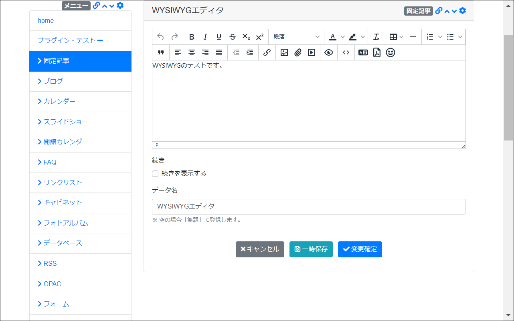

WYSIWYG - 文字の装飾
太字や下線などの文字の装飾ができます。編集内容を戻すアンドゥも使えます。
画面
【文字の装飾】

- 文字の装飾に関係する機能を以下で説明します。
| アイコン | 説明 |
|---|---|
| 編集した内容を元に戻す「アンドゥ」機能です。保存すると戻すことはできません。 | |
| 「アンドゥ」したものをやり直す「リドゥ」機能です。 | |
| 文字を太字にできます。 | |
| 文字を斜体にできます。日本語フォントの場合は斜体にならない場合があります。 | |
| 文字に下線を設定できます。 | |
| 文字に取り消し線を設定できます。 | |
| 文字を下付き設定にできます。 | |
| 文字を上付き設定にできます。 | |
| 設定した書式をクリアできます。 |